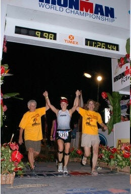

Watch video to learn More
Meet Shannon
3X Ironman World Championship Triathlete | Lifetime Fitness Coach | Mindset Mastery | Expert in Hormonal Health, specializing in perimenopause to post-menopause.
Watch video to learn More
3X Ironman World Championship Triathlete | Lifetime Fitness Coach | Mindset Mastery | Expert in Hormonal Health, specializing in perimenopause to post-menopause.

In my 20s, exercise became my antidote to the poor eating habits cultivated over years of consuming processed foods, combined with the necessity to eat on a budget after college.
By my 30s, exercise had evolved into a challenge for me. I aimed to prove my capabilities by completing 17 Ironman triathlons and 40 marathons by the age of 40. This journey taught me the power of believing in my own strength. I realized that with perseverance, I could achieve anything.
However, in my 40s, exercise nearly killed me. I suffered a severe injury during a 5-hour bike training session, resulting in a broken neck. After two ambulance rides and a helicopter evacuation, I spent eight weeks immobilized in a neck brace. This incident forced me to reevaluate my life. It made me acutely aware of the preciousness of life and the need to make it extraordinary. Ultimately, it gave me the courage to leave a toxic marriage and reassess my personal and professional goals, particularly in the areas of health and fitness.
Now, in my 50s, the eat less, exercise more strategy does not work. That's why I focus on exercise that combats hormone-deficient symptoms of menopause. By tailoring workouts and nutrition to enhance lean muscle tissue, I maintain my muscle tissue which helps reduce body fat. And, just as important, I feel like me again! Energetic, happy, and powerful.
I have personally witnessed the transformative benefits of adopting the THRIVE Women principles, and I've seen these benefits in my clients as well.
My 40 & 50 year olds have more energy & self confidence in the time of life when many women are both mom's and parental caretakers, working full-time -- being Wonder Woman.
My 60 & 70 year olds can see their muscles again and their waistbands no longer feel tight.
My Gramma, age 86, completed her first 5K!
feeling like sh*t is not.
Are you ready to embrace the joy that comes from being physically fit and mentally empowered?
Let's chat and talk about how THRIVE Women Fitness can help you unlock the power of optimizing your health now and for the rest of your life.